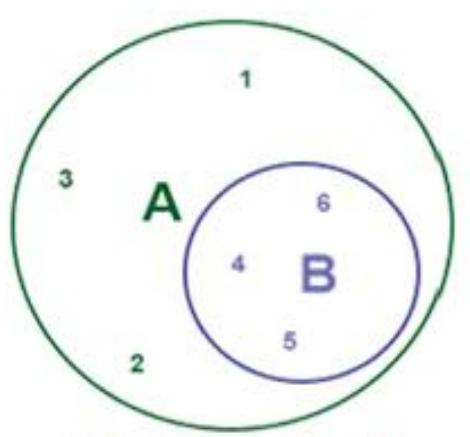

CHAPTER 3: LOGIC GATES AND BOOLEAN ALGEBRA (Continued)
Subset
Consider the sets, $\mathrm{X}=$ set of all students in your school and $\mathrm{Y}=$ set of all students in your class. It is obvious that set of all students in your class will be in your school. So, every element of Y is also an element of X . We say that Y is a subset of X . The fact that Y is a subset of X is expressed in symbol as $Y \subset X$. The symbol $\subset$ stands for "is a subset of" or "is contained in".If Y is a subset of X, then X is known to be a superset of Y . The subset of a set will have elements equal to or less than the elements in the given set.
Subset Definition
A set A is said to be a subset of a set B, if every element of A is also an element of B. In other words, $A \subset B$ if whenever $a \in A$, then $a \in B$. It is often convenient to use the symbol $\Rightarrow$ which means "implies". Suppose, for two sets $\dot{A}$ and $B, A=\{1,2,3\}$ and $B=\{1\}$ then $B$ is the subset of A.
Subset Symbol:
Using the symbol $\Rightarrow$, we can write the definition of subset as follows:
We read it as " $A$ is a subset of $B$ if $a$ is an element of $A$, which implies that a is also an element of $B$ ". If $A$ is not a subset of $B$, we write $A \not\subset B$. If $A=\{1,2,3,4,5,6\}$ and $B=\{4,5,6\}$, then we can draw a Venn diagram for this as follows:
$B$ is subset of $A$
Operation of a Set
Union of Sets
Set is an important part of the mathematics. It is applied in almost many branch of mathematics. Set is the relation of some givenn data. There are many functions of set like union, intersection. Here, we will discuss about union of sets.
We denote the union of $A$ and $B$ by $A \cup B$. Thus, $A \cup B = \{x \mid x \in A \text{ or } x \in B \text{ or } x \in A \text{ and } B\}$. We write $A \cup B = \{x \mid x \in A \text{ or } x \in B\}$ where, it is unnderstood that the word 'or' is used in the inclusive sense. That is, $x \in A$ or $x \in B$ stands for $x \in A$ or $x \in B$ or $x \in A$ and $B$.

Union of Two Sets
Let we have two sets A and B, thhen the union of these two sets is the set of all elements of each sets i.e. the set of those elements which are in either sets.
If $\mathrm{A}=\{1,2,3,4\}$ and $\mathrm{B}=\{3,4,5,6,7\}$ then $A \cup B=\{1,2,3,4,5,6,7\}$.
With the help of Venn diagram, we can prove it.
Union of Countable Sets
A set of natural numbers which is a subset of a set with the same number of elements is called the countable set. The union of two countable sets is again a countable set. Let X and Y be two countable sets then $\mathrm{X} \cup \mathrm{Y}$ is countable. Clearly, if $\mathrm{X} \cup \mathrm{Y}$ is countable, then X and Y are each countable, as they are subsets of a countable set.
Conversely, let us suppose that we have two countable sets X and Y . And, we can define two surjection functions $f: N \rightarrow X$ and $g: N \rightarrow Y$. Let $Z=X \cup Y$. Then, we can define $h: N \rightarrow Z$ in a way that $\mathrm{h}(2 \mathrm{n}+1)=\mathrm{f}(\mathrm{n})$ for $n=0,1, \ldots$ and $\mathrm{h}(2 \mathrm{n})=\mathrm{g}(\mathrm{n}), \mathrm{n}=1,2, \ldots$ Then, h is well defined function for every value of $i \in N$ is either odd or even, so $h(i)$ is defined. Since $h$ is onto function for any $z \in Z$, then $z \in X$ or $z \in Y$. If $z \in X$, then $h(2 q+1)=z$ for some value of $q$ and if $\mathrm{z} \in \mathrm{Y}$ then $\mathrm{h}(2 \mathrm{p})=\mathrm{z}$ for some value of $p$ . Hence, Z is countable. So, we can say that the union of two countable sets is again a countable set.
Union of Three Sets
If we have three sets say $A, B$ and $C$, then the union of these three sets is the set that contains all the elements or all contains that belongs to either A or B or C or to all three sets.
$\mathrm{A}=\{1,2,3,4\}, \mathrm{B}=\{2,3,5,6\}$ and $\mathrm{C}=\{2,4,5,7\}$. Then, $A \cup B \cup C=\{1,2,3,4,5,6,7\}$
We can show it in the Venn diagram as follows:
Union of Sets Examples
Given below are some of the examples on union of sets.
Solved Examples
Question 1: Find the union of each of the following two sets:
- $\mathrm{X}=\{1,3,6\} \mathrm{Y}=\{1,2,6\}$
- $X=\{a, e, i, o, u\} Y=\{a, e, c\}$
- $\mathrm{X}=\{3,4,5\} \mathrm{B}=\varphi$
Solution:
- $X \cup Y=\{1,2,3,6\}$
- $X \cup Y=\{\mathrm{a}, \mathrm{c}, \mathrm{e}, \mathrm{i}, \mathrm{o}, \mathrm{u}\}$
- $X \cup Y=\{3,4,5\}$
Question 2:
If $\mathrm{X}=\{1,2,5,6\}, \mathrm{Y}=\{3,4,6,9\}, \mathrm{Z}=\{3,5,6,9\}$ and $\mathrm{W}=\{3,6,9,11\}$. Find
- $X \cup Y$
- $X \cup Z$
- $Y \cup Z$
- $Y \cup W$
- $X \cup Y \cup Z$
- $X \cup Y \cup W$
- $Y \cup Z \cup W$
Solution:
- $X \cup Y=\{1,2,3,4,5,6,9\}$
- $X \cup Z=\{1,2,3,5,6,9\}$
- $Y \cup Z=\{3,4,5,6,9\}$
- $Y \cup W=\{3,4,6,9,11\}$
- $X \cup Y \cup Z=\{1,2,3,4,5,6,9\}$
- $X \cup Y \cup W=\{1,2,3,4,5,6,9,11\}$
- $Y \cup Z \cup W=\{3,4,5,6,9,11\}$
Find the Union of the Sets
Here, we will learn how to find the union of the sets with the help of the following examples.
Solved Examples
Question 1:
Two sets are given.
$A=\{5,12,13,16,19\}$
$B=\{5,10,13,16,19\}$
Find $A \cup B$
Solution:
Given sets are:
$A=\{5,12,13,16,19\}$
$B=\{5,10,13,16,19\}$
$A \cup B=\{5,10,12,13,16,19\}$
Here, common elements in A, B are 5,13,16,19
So, it is taken only one times.
Question 2:
Find $X \cup Y$ for the following set.
$X=\{4,6,8,9,11\}$
$\mathrm{Y}=\{3,5,6,8,11\}$
Solution:
Given sets are
$X=\{4,6,8,9,11\}$
$\mathrm{Y}=\{3,5,6,8,11\}$
So, $X \cup Y=\{3,4,5,6,8,9,11\}$
Here, common element is taken only one time.
Intersection of Sets
Intersection is an operation on sets. It is just opposite to union. It is a very useful and important concept in set theory. Before we learn about intersection, we need to understand some basic concept like what is set.
A set is a well-defined collection of data. It's data is known as it's members or elements. We represent the set by capital letters A, B, C, X, Y, Z, etc. We use the concept of set in daily life. For example, a team has five members. So, this is a set.
Find the Intersection of the Sets
For finding the intersection of two sets, we usually select those elements which are common in both the sets. If there are three sets, then we select those elements which are common in all three sets. Hence, if there are n number of sets, then we select only those elements which are common in all the n sets. In this way, we find the intersection of sets
Intersecting Set: Two sets A and B are said to be intersecting if A $\cap$ B $\neq \phi$
Disjoint set: Two sets A and B are said to be disjoint if A $\cap$ B = $\phi$
Solved Examples
Question 1:
If $A=\{1,3,4,6,9\}$ and $B=\{2,4,6,8\}$, find $A \cap B$. What do you conclude?
Solution:
We have given that $\mathrm{A}=\{1,3,4,6,9\}$ and $\mathrm{B}=\{2,4,6,8\}$
We have to find the intersection of A and B.
So, $\mathrm{A} \cap \mathrm{B}=\{1,3,4,6,9\} \cap\{2,4,6,8\}$
$A \cap B=\{4,6\}$
Question 2:
If $A=\{1,3,5,7,9\}$ and $B=\{2,4,6,8\}$, find $A \cap B$. What do you conclude?
Solution:
We have $\mathrm{A} \cap \mathrm{B}=\{1,3,5,7,9\} \cap \{2,4,6,8\}=\phi$
If no data match in both the sets, both the sets are known as disjoint sets. Thus, A and B are disjoint sets.
Question 3:
If $\mathrm{A}=\{1,2,3,4,5,6,7\}, \mathrm{B}=\{2,4,6,8,10\}$ and $\mathrm{C}=\{4,6,7,8,9,10,11\}$, then find $\mathrm{A} \cap B$ and $A \cap B \cap C$.
Solution:
Given sets are
$\mathrm{A}=\{1,2,3,4,5,6,7\}$
$B=\{2,4,6,8,10\}$
$C=\{4,6,7,8,9,10,11\}$
First, we have to find $A \cap B$. Then, we have to treat $A \cap B$ as a single set. For $\mathrm{A} \cap \mathrm{B}$, we select those elements which are common in sets A and B. So, $\mathrm{A} \cap \mathrm{B}=\{2,4,6\}$
For $(A \cap B) \cap C$, we select those elements which are common in sets $A \cap B$ and $C$.
So, $(A \cap B) \cap C=\{4,6\}$
So, $A \cap B \cap C=\{4,6\}$
Question 4:
If $A=\{1,3,5,7,9\}, B=\{2,4,6,8\}$ and $C=\{2,3,5,7,11\}$, find $(A \cap B)$ and $(A \cap C)$ What do you conclude?
Solution:
We have given that
$\mathrm{A}=\{1,3,5,7,9\}$
$B=\{2,4,6,8\}$
$C=\{2,3,5,7,11\}$
$\mathrm{A} \cap \mathrm{B}=\{1,3,5,7,9\} \cap\{2,4,6,8\}=\phi$
Thus, A and B are disjoint sets
$\mathrm{A} \cap \mathrm{C}=\{1,3,5,7,9\} \cap\{2,3,5,7,11\}=\{3,5,7\}$
Thus, A and B are disjoint sets while A and C are intersecting sets.